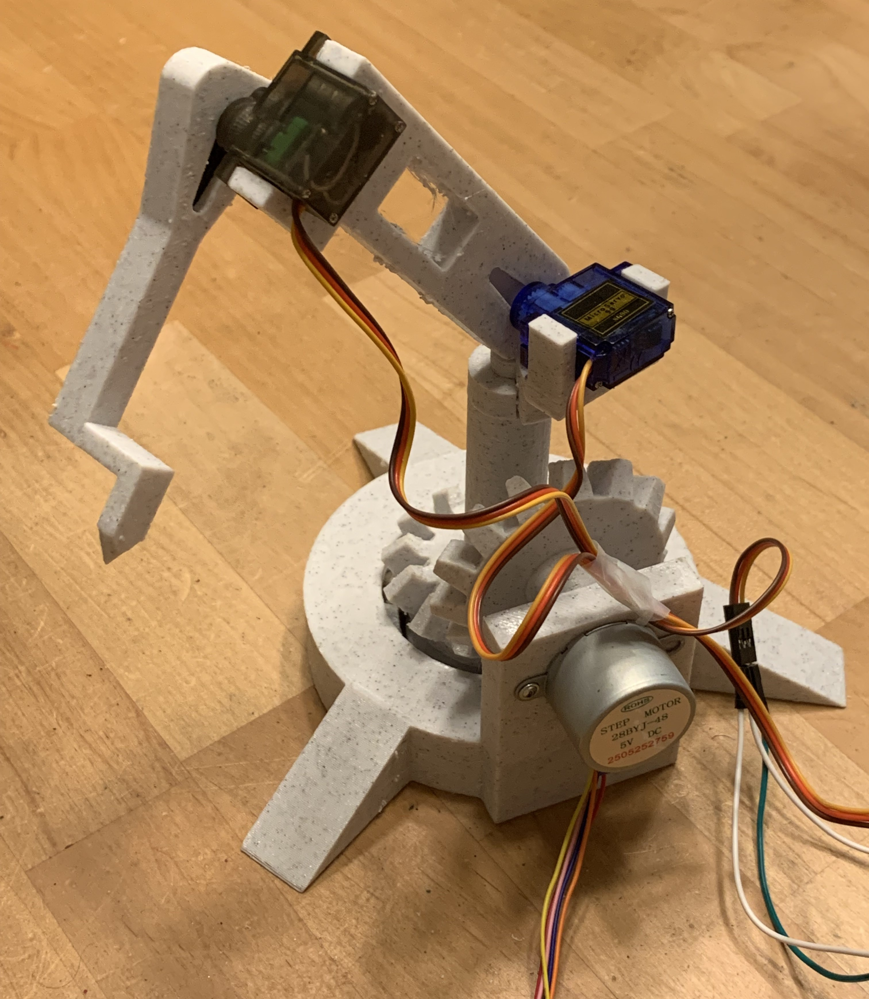
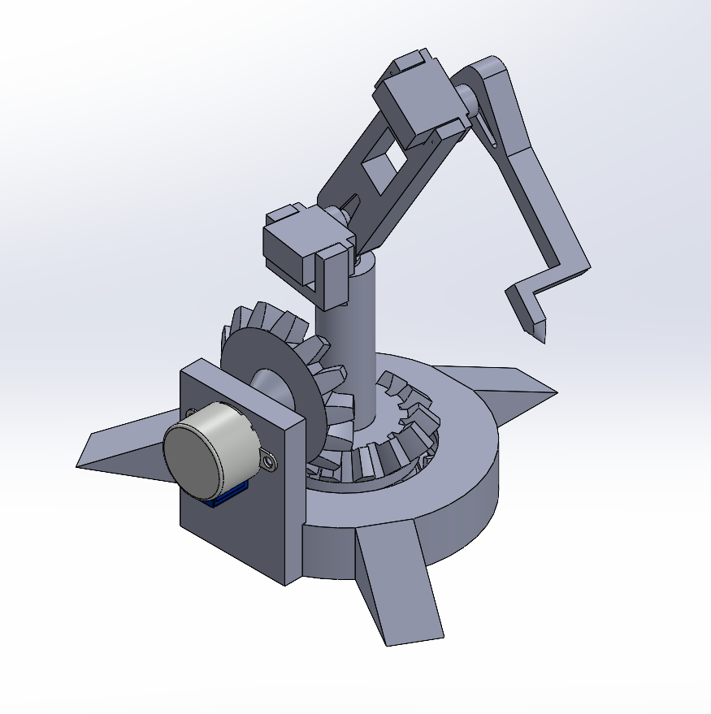
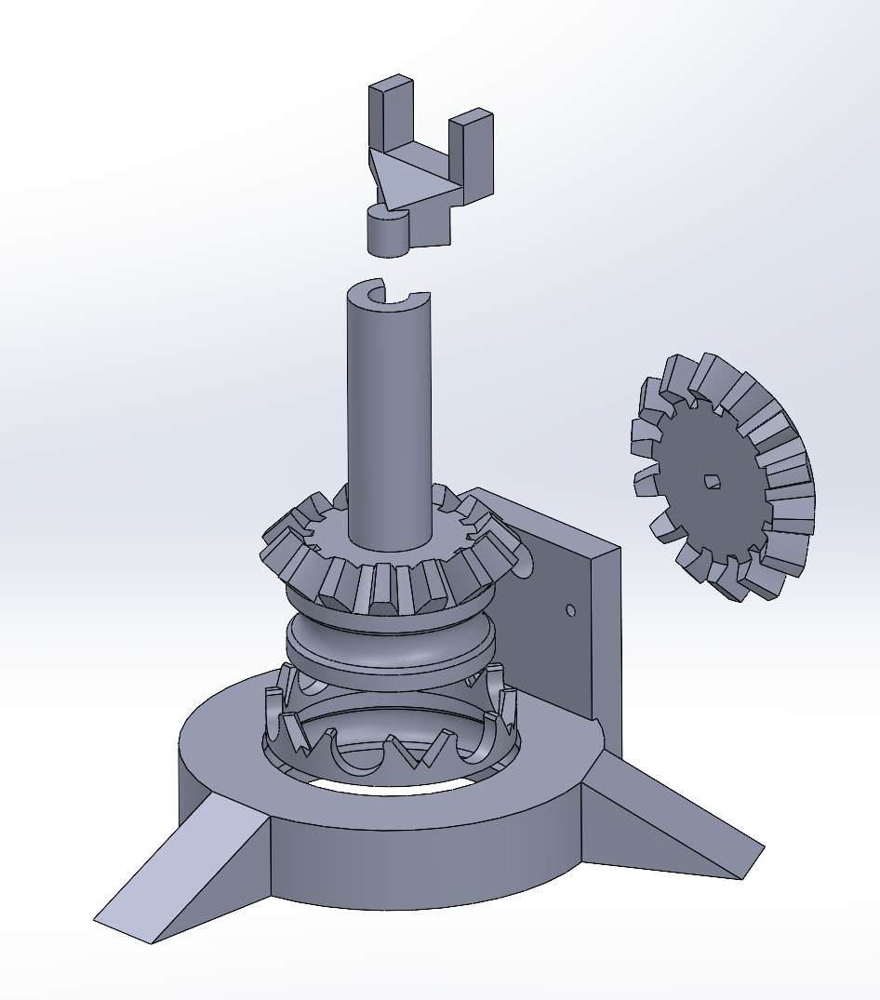
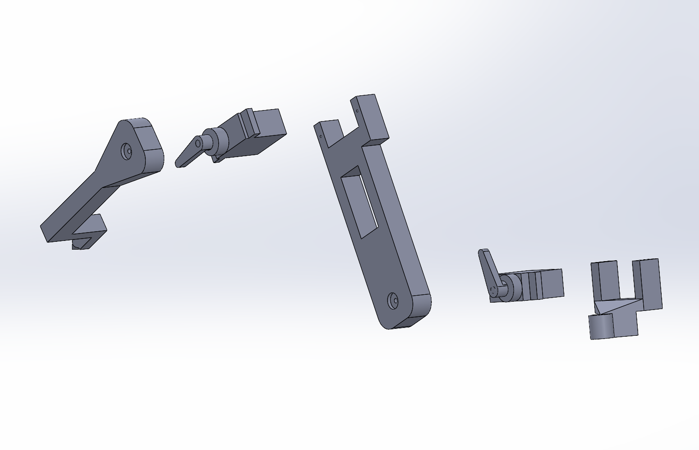
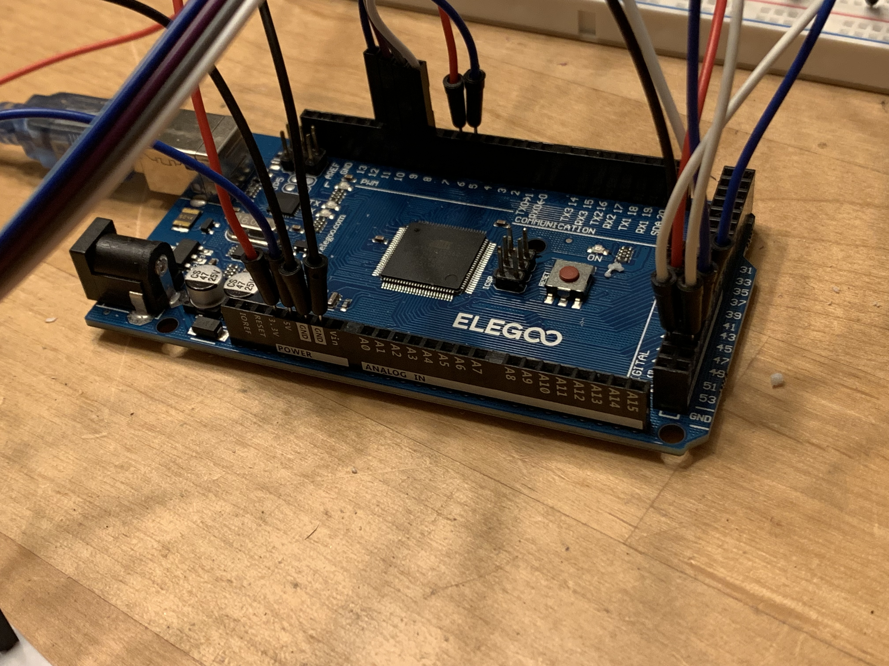
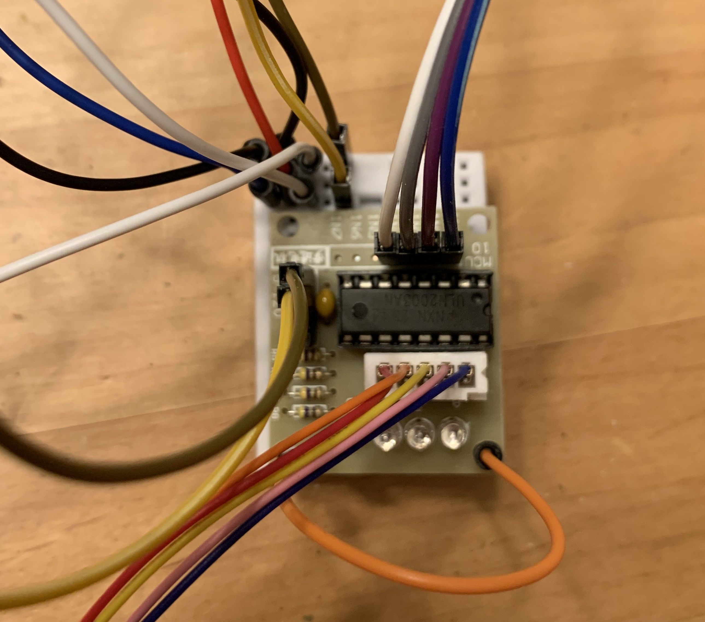
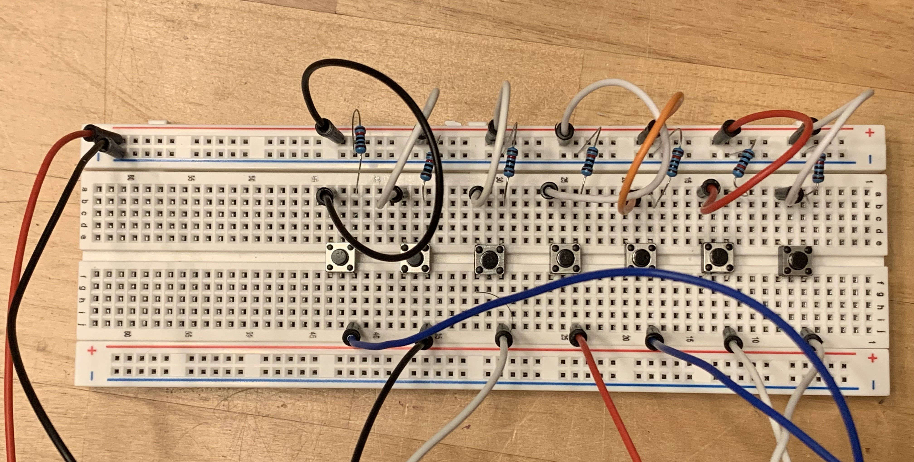

Note: though the project is ongoing, all the following represents the system in its current state
Overview
This project demonstrates real-time Cartesian control of a 3-DOF robotic arm using a Jacobian-based inverse kinematics solver, task-space PID control, and a singularity detection and avoidance strategy. The system integrates mechanical design, electronics, and embedded control software to achieve accurate end-effector motion within a constrained workspace.

3 DOF Robot Arm.
Why This Project Matters
Cartesian control and singularity management are fundamental challenges in real-world robotic systems, including industrial manipulators, collaborative robots, and medical devices. While these topics are often introduced theoretically, implementing them on embedded hardware exposes practical issues such as numerical instability, electronic restrictions, and computational limits.
This project demonstrates how control concepts such as Jacobian-based inverse kinematics, damped least squares, and task-space PID control can be adapted to low-cost hardware with limited precision. By explicitly addressing singularity detection, avoidance, and recovery, the system prioritizes robustness over idealized performance.
Beyond achieving end-effector motion, this work emphasizes system-level engineering: understanding failure modes, making design tradeoffs, and validating behavior through physical experiments.
System Design Summary
Forward and inverse kinematics: Provides the mathematical mapping between joint angles and end-effector position.
Jacobian formulation with damped least squares: Ensures stable inversion near singularities and enables task-space velocity control.
Task-space control: Commands the end-effector directly, simplifying motion planning compared to joint-space control.
PID control for Cartesian commands with variable timestep: Corrects errors in real time while accounting for non-uniform loop intervals.
Singularity detection using eigenvalue approximations: Identifies configurations where the robot loses degrees of freedom without full SVD computation.
Singularity avoidance through motion redirection: Maintains smooth operation near critical configurations.
Motivation and Problem Statement
The goal of this project was to design and program a robotic arm with rotational joints that can move its end-effector along an arbitrary vector in ℝ³, rather than commanding individual joint angles directly. This approach transforms the control problem from joint space to task space, requiring careful consideration of kinematics, Jacobians, and feedback control.
This project also provided an opportunity to integrate concepts from multivariable calculus, linear algebra, statics, and introductory C programming (class I had taken in the previous semester) into a single physical system, bridging the gap between theory and practical implementation.
The system was intentionally limited to an Arduino Uno, two 9g hobby servos, and a single stepper motor. This configuration represents the minimum number of joints required to span a three-dimensional workspace while avoiding redundancy and null-space optimization.
Hardware limitations strongly influenced the control strategy. The Arduino’s limited computational resources imposed constraints on numerical precision and algorithmic complexity. Similarly, the servos’ integer-degree resolution introduced quantization errors affecting end-effector accuracy. These limitations highlighted trade-offs between theoretical design and embedded implementation.
System Architecture Overview
Mechanical Design and Power Transmission

Isometric view of the robotic arm SolidWorks assembly.
Design Goals and Constraints
The mechanical design was constrained by actuator torque limits, 3D-printable geometry, and the requirement for repeatable rotational motion across all three degrees of freedom. Components were manufactured in-house using PETG filament, emphasizing modularity and ease of iteration. The stepper motor CAD model was imported from GrabCAD.com (user: Vladimir Rovinskiy).
Mechanical design decisions directly affected control performance. Backlash, actuator limitations, and 3D-printed tolerances were considered during kinematics validation and PID tuning.
Base Rotation and Drive System
The base functions as a bearing-driven rotating platform. A stepper motor in the stationary base drives a bevel gear, which meshes with a second bevel gear rigidly attached to the rotating base. This separates load-bearing and torque transmission: bearings support axial and radial loads, while the bevel gear transmits rotational motion. This design improves rotational stability compared to direct shaft mounting and mirrors industrial rotary joint architectures.

Exploded view of the base assembly.
Link Geometry and Joint Layout
The manipulator has two serially connected links mounted above the rotating base, forming a 3-DOF arm. Initial link lengths of 200 mm were reduced to 80 mm after testing actuator limitations.
The first link mounts directly to a servo horn and includes a bracket for the second servo. The second link includes a pointer for visually validating end-effector position.

Exploded view of arm assembly.
Materials and Manufacturing
Components were 3D-printed from PETG for increased toughness and resistance to brittle failure. Careful attention to tolerances, fastener placement, and assembly order ensured correct interfacing with electronics.
Mechanical Limitations
Limitations include actuator torque constraints, backlash in 3D-printed gears, and the lack of integrated wire management. These factors affect workspace and control performance and inform proposed improvements.
Electronics and Hardware
Control hardware includes an Arduino Uno, two SG90 servos, and a 28BYJ-48 stepper motor. Components were chosen for accessibility and cost-effectiveness.
The Arduino operates at ~16 MHz, limiting real-time performance. Servos provide ~1° resolution, introducing quantization errors. A solderless breadboard facilitated rapid iteration and debugging.
For the purposes of additional button inputs, an Arduino Mega was used in the final iteration of this project though it is important to note that everything is fully functional on a standard Arduino Uno

Arduino Mega clone (Elegoo Mega) used in final iteration.

Top view of breadboard used to power the electronics. Connected to 5v and ground pins on the Microcontroller for power.

Top view of breadboard used for user button inputs. All buttons connected to 3.3v and ground pins on the Microcontroller and wired through a 10k ohm resistor.
Software Architecture
Software was developed iteratively for modularity and testability. The control loop follows this sequence:
Initialize joint states and system parameters.
Compute forward kinematics.
Accept a user-defined velocity vector in task space.
Compute the Jacobian matrix.
Detect proximity to kinematic singularities.
Correct the desired velocity vector using a PID controller.
Solve the damped least-squares inverse kinematics problem for joint updates.
Send updated joint angles to actuators.
Mathematics and Kinematics
Forward Kinematics
Forward kinematics were derived by computing Cartesian coordinates as functions of joint angles. This maps joint space to task space.
Graphical representation of forward kinematics.
Inverse Kinematics
Initial solutions used trigonometry based on the robot’s geometry, effective for unit-vector commands but limited in generality.
A Jacobian-based inverse kinematics method was ultimately implemented, using local linearization to relate changes in end-effector position to joint angle changes.
Hand-derived Jacobian relating joint velocities to end-effector velocity.Simplified relationship between position changes and joint angle changes.
Jacobian Solution and Damping
The inverse problem was solved using least-squares with damping to improve numerical stability near singularities.
The damping coefficient ensures the eigenvalues of J^T J remain positive, preventing instability.
Least-squares solution of the Jacobian matrix equation.Damping stabilizes inversion near singular configurations.
Singularity Detection and Avoidance
Singularities were detected by monitoring the smallest singular value of the Jacobian matrix. Computing a full singular value decomposition at runtime was avoided due to computational constraints; instead, eigenvalue-based methods were used to approximate proximity to singular configurations.
Hand-derived explanation of how the largest eigenvector of a matrix can be found. To find the smallest Eigenvector and therefore smallest singular value it follows from this explanation that solving the augmented matrix [A,w2] and repeating the process would yield such a result.
Control Strategy
Intial Method
Positional cartesian controls paired with an error correction system was the first major control method. The method operates by taking in a cartesian position command, running inverse kinematics to move the bot to said position, then the bot compares its current position to what the commanded position
was using vector projection and then runs inverse kinematics again this time in the direction of the error vector. While boasting a high accuracy, this method was ultimately scrapped because the error vector movement was victim to the same mechanical issues as the initial movement vector, leading to
unavoidable drift. This method also demanded computing inverse kinematics twice in one direction command, something extremely computationally taxing which pushed the arduino to its limit.
Current Method
Velocity-based cartesian controls utilize PID closed loop controls to "push and pull" the robot to its desired destination. This method operates by accepting a user defined velocity vector which is then passed into an inverse kinematics solver function where the jacobian matrix is initialized. The desired
velocity vector is then passed into a PID controller where it is then corrected with respect to the previous error. With this corrected velocity vector the change in angles vector is computed. Utilizing the same jacobian initialized before, the velocity vector is re-derived by solving for it with respect
to the change in angle vector which produces a residual change in position. This residual change in position is used to solve for a residual change in angles via the same damped least squares solver. The original change in angles vector is combined with this residual vector to find a final change in angles
vector. This method ensures that the PID controller is fully aware of the jacobian because its error is computed after the residual vectors are accounted for. Previous iterations of this method placed the PID controller before the jacobian computation, which caused errors in that the PID controls would make
changes without regard to positional capabilities, leading to derivative wind up and major build ups of energy near singular positions. The major benefit of this method over purely cartesian commands is that the jacobian is only computed once which saves major computational space.
Ultimately, a
velocity-based Cartesian PID controller was implemented to compute corrective task-space velocities based on positional error. While proportional control dominated performance due to actuator quantization and limited steady-state disturbances, derivative damping improved stability near singular regions.
Integral action provided limited benefit under current hardware constraints but remains part of the framework for future iterations.
Software Implementation
The system was programmed in Arduino C++ using the Arduino IDE. Libraries used include Servo.h, math.h, and BasicLinearAlgebra.h, allowing focus on control logic and integration.
Challenges and Failure Modes
Mechanical challenges included achieving precise tolerances with a consumer-grade 3D printer, especially for the base bearing. Sanding and fine adjustments were required for smooth rotation. Wire management was difficult and remains limited.
Control challenges arose from discretizing continuous laws in embedded software. PID tuning and singularity detection introduced additional sources of error.
Results
Preliminary tests show stable Cartesian motion away from singularities. Quantitative performance metrics such as RMS tracking error are under evaluation.
Future Improvements
Higher-precision actuators for improved tracking accuracy
Implement motors with encoders to use PWM to better stabilize position
Improved singularity handling
Improved gear system on base assembly for reduced backlash and inprecision
Redesigned mechanical structure with integrated wire management
Wiring soldered to PCB/custom made PCB
Additional degrees of freedom enabling redundancy and null-space optimization
Migration to a more powerful microcontroller, e.g., ESP32
Wireless control and remote operation
Skills Demonstrated
Forward and inverse kinematics
Jacobian-based control
PID control systems
Embedded systems programming
C++ / Arduino development
System integration and iterative design
I highly encourage you the reader to reach out to me at ralphie0302@gmail.com with any critiques or questions
.jpeg)